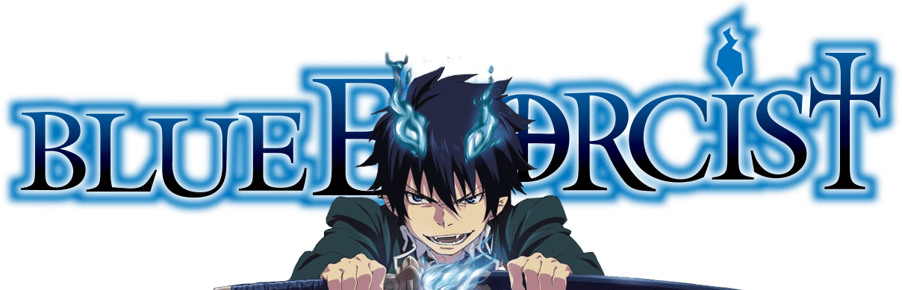

-
frgthy

Rin Okumura
-

25 épisodes + 1 OAV
Blue Exorcist
Type : Shōnen
Genre : Action, Démons
Thèmes : Surnaturel
Manga
Auteur : Kazue Kato
Éditeur : (ja) Shūeisha / (fr) Kazé
Prépublication : Japon Jump Square
Sortie initiale : 4 avril 2009 – en cours
Anime Japonais
Réalisateur : Tensai Okamura
Producteur : Hiro Maruyama
Scénariste : Ryōta Yamaguchi
Studio d’animation : A-1 Pictures
Compositeur : Hiroyuki Sawano
Compositeur : Hiroyuki Sawano
Licence (fr) Netflix (streaming) / (fr) Kazé (DVD/Blu-ray)
Chaîne Drapeau du Japon TBS, MBS
1re diffusion 17 avril 2011 – 2 octobre 2011